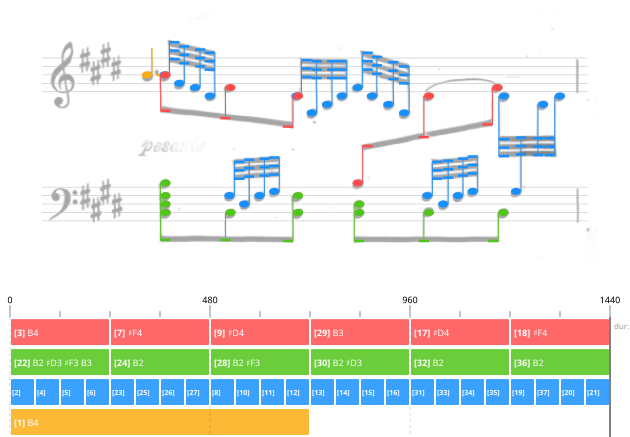

The Regulation Method: BeadSolver
BeadSolver treats measure-level decoding as a topology problem. Instead of asking the system to predict a complete polyphonic structure in one shot, it incrementally builds voice chains among event candidates and checks whether the resulting measure becomes globally coherent in time.


The key idea is to separate local evidence from structural commitment. The model estimates which continuation is plausible at each step, while the solver keeps multiple possibilities alive long enough to compare their consequences at the measure level.


How BeadSolver Becomes an MDP
How can structure decoding across multiple voices be formulated as a Markov decision process? One useful intuition is to treat each barline as a space-time portal: the solver may finish one voice, jump through the barline, and continue from the beginning of another voice, while keeping the global measure structure consistent.

Searching Visualization
The following examples visualize how different solvers explore measure-level topology candidates and converge to coherent voice structures. Click a image to play animation.
BeadPicker
BeadPicker is the learned model inside the solver. At each step, it reads the current measure candidates together with the committed prefix, then estimates which continuation is plausible and provides the local attribute hints that guide search without deciding the final structure on its own.